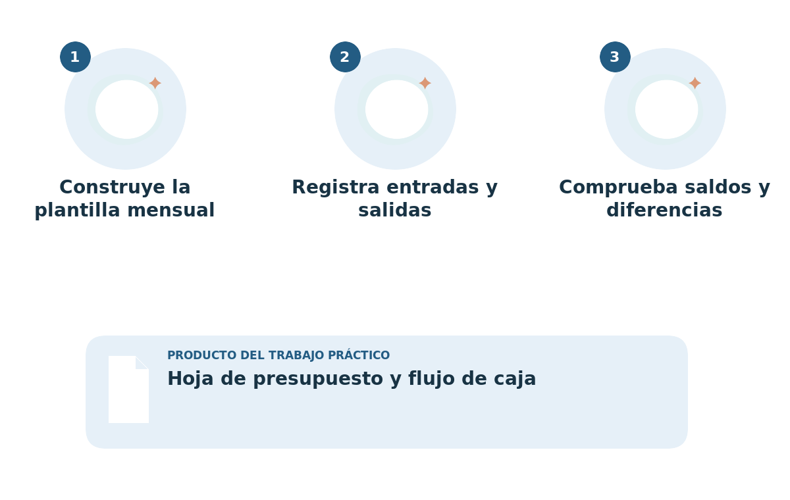

<div style="font-family: 'Segoe UI', Arial, sans-serif; color: #333; line-height: 1.6; max-width: 100%; margin-bottom: 20px;">
  <div style="background-color: #ffffff; background-image: linear-gradient(135deg, #ffffff 0%, #f8f9fa 100%); border: 1px solid #dee2e6; border-radius: 15px; padding: 25px 30px; box-shadow: 0 4px 12px rgba(0,0,0,0.05); position: relative; overflow: hidden;">
    <div style="position: absolute; left: 0; top: 0; bottom: 0; width: 6px; background: #0056b3;" aria-hidden="true"> </div>
    <div style="position: relative; z-index: 1;">
<h2 style="color: #1c3055; margin-top: 0; font-size: 1.4rem; font-weight: bold;">Entrega del Trabajo Práctico-Experimental de la Unidad 2</h2>
<p></p>

<p><strong>Asignatura:</strong> Fundamentos de Finanzas Personales y Empresariales<br>
<strong>Actividad: Presupuesto y control mensual del dinero</strong><br><strong>Evidencia:</strong> Un libro con el flujo de seis meses, el control del presupuesto, las pruebas y una explicación de las decisiones.</p>
<p>SierraTech, una empresa ficticia, inicia el mes 1 con 1 200 dólares en caja. Sus contratos se cobran a 30 días y sus pagos vencen cada mes. En el mes 3 coinciden menos cobros y una renovación de servidores y licencias de 1 850 dólares.</p>
<p>En el mes 1 se presupuestaron 2 000 dólares de cobros, 900 de honorarios, 450 de servidores y 200 de publicidad. Los valores ejecutados son los de la tabla. Compara ambos.</p>
<div style="overflow-x:auto;"><table class="table" style="width:100%;border-collapse:collapse;font-size:.9rem;"><thead><tr><th scope="col" style="padding:8px;background:#eef4fb;text-align:left;">Concepto operativo</th><th scope="col" style="padding:8px;background:#eef4fb;text-align:left;">Mes 1 (dólares estadounidenses)</th><th scope="col" style="padding:8px;background:#eef4fb;text-align:left;">Mes 2 (dólares estadounidenses)</th><th scope="col" style="padding:8px;background:#eef4fb;text-align:left;">Mes 3 (dólares estadounidenses)</th><th scope="col" style="padding:8px;background:#eef4fb;text-align:left;">Mes 4 (dólares estadounidenses)</th><th scope="col" style="padding:8px;background:#eef4fb;text-align:left;">Mes 5 (dólares estadounidenses)</th><th scope="col" style="padding:8px;background:#eef4fb;text-align:left;">Mes 6 (dólares estadounidenses)</th></tr></thead><tbody><tr><td style="padding:8px;border-bottom:1px solid #dee2e6;vertical-align:top;">Cobros efectivos por contratos web y soporte</td><td style="padding:8px;border-bottom:1px solid #dee2e6;vertical-align:top;">1 800</td><td style="padding:8px;border-bottom:1px solid #dee2e6;vertical-align:top;">2 100</td><td style="padding:8px;border-bottom:1px solid #dee2e6;vertical-align:top;">1 400</td><td style="padding:8px;border-bottom:1px solid #dee2e6;vertical-align:top;">2 800</td><td style="padding:8px;border-bottom:1px solid #dee2e6;vertical-align:top;">2 400</td><td style="padding:8px;border-bottom:1px solid #dee2e6;vertical-align:top;">2 600</td></tr><tr><td style="padding:8px;border-bottom:1px solid #dee2e6;vertical-align:top;">Pagos de honorarios técnicos y administración</td><td style="padding:8px;border-bottom:1px solid #dee2e6;vertical-align:top;">900</td><td style="padding:8px;border-bottom:1px solid #dee2e6;vertical-align:top;">1 000</td><td style="padding:8px;border-bottom:1px solid #dee2e6;vertical-align:top;">1 000</td><td style="padding:8px;border-bottom:1px solid #dee2e6;vertical-align:top;">1 050</td><td style="padding:8px;border-bottom:1px solid #dee2e6;vertical-align:top;">1 000</td><td style="padding:8px;border-bottom:1px solid #dee2e6;vertical-align:top;">1 050</td></tr><tr><td style="padding:8px;border-bottom:1px solid #dee2e6;vertical-align:top;">Pagos de servidores en la nube y licencias</td><td style="padding:8px;border-bottom:1px solid #dee2e6;vertical-align:top;">490</td><td style="padding:8px;border-bottom:1px solid #dee2e6;vertical-align:top;">550</td><td style="padding:8px;border-bottom:1px solid #dee2e6;vertical-align:top;">1 850</td><td style="padding:8px;border-bottom:1px solid #dee2e6;vertical-align:top;">550</td><td style="padding:8px;border-bottom:1px solid #dee2e6;vertical-align:top;">550</td><td style="padding:8px;border-bottom:1px solid #dee2e6;vertical-align:top;">550</td></tr><tr><td style="padding:8px;border-bottom:1px solid #dee2e6;vertical-align:top;">Pagos de publicidad digital y otros gastos operativos</td><td style="padding:8px;border-bottom:1px solid #dee2e6;vertical-align:top;">260</td><td style="padding:8px;border-bottom:1px solid #dee2e6;vertical-align:top;">350</td><td style="padding:8px;border-bottom:1px solid #dee2e6;vertical-align:top;">350</td><td style="padding:8px;border-bottom:1px solid #dee2e6;vertical-align:top;">350</td><td style="padding:8px;border-bottom:1px solid #dee2e6;vertical-align:top;">300</td><td style="padding:8px;border-bottom:1px solid #dee2e6;vertical-align:top;">300</td></tr></tbody></table></div>
<p><strong>Qué completar</strong></p>
<ol><li>Copia los datos y calcula con fórmulas pagos totales, cobros menos pagos y saldo final. Parte de los 1 200 dólares iniciales y proyecta los seis meses.</li><li>Haz que el saldo inicial de cada mes tome el saldo final anterior. Añade una alerta si el saldo es negativo. Comprueba el déficit de 250 dólares del mes 3.</li><li>Compara presupuesto y ejecución del mes 1. Calcula la diferencia en dólares y porcentaje y señala cuáles cambios favorecen o perjudican al negocio.</li><li>Incluye un presupuesto personal para el socio con un retiro de 900 dólares. Distribuye necesidades, obligaciones, ahorro mínimo del 10 % y gastos flexibles. Explica por qué no es lo mismo que el flujo del negocio.</li><li>Comprueba el caso original. Luego prueba una caída de cobros del 25 % en el mes 2 o propone un ajuste que mantenga el saldo por encima de 300 dólares. Explica qué error produciría romper la unión entre saldos o contar ventas aún no cobradas.</li><li>Añade una explicación de media página con las diferencias del mes 1 y tu solución para el mes 3. Cita las fuentes y explica por qué mirar solo el total semestral ocultaría el problema.</li></ol>
<p><strong>Cómo entregar</strong></p>
<p>Entrega tu trabajo una sola vez al cierre de la semana 4. En esta Tarea de Moodle, selecciona <strong>Agregar entrega</strong>, adjunta tu evidencia y pulsa <strong>Guardar cambios</strong>. Si aparece <strong>Enviar tarea</strong>, púlsalo y comprueba el estado.</p>
<p><strong>Nombre del expediente:</strong> Apellido_Nombre_Trabajo_experimental_Unidad_2.</p>
<p><strong>Formato:</strong> Entrega el libro de cálculo editable con dos pestañas: flujo de caja y control del presupuesto. Incluye el análisis en el libro o en un documento adjunto.</p>
<p>Conserva el registro original del caso y anota las correcciones en tu expediente. Entrega el trabajo autónomo por separado.</p>
<details><summary style="color:#0056b3;font-weight:bold;cursor:pointer;">Rúbrica de la práctica · 16 puntos</summary><div style="overflow-x:auto;"><table class="table" style="width:100%;border-collapse:collapse;font-size:.9rem;"><thead><tr><th scope="col" style="padding:8px;background:#eef4fb;text-align:left;">Criterio y puntaje máximo</th><th scope="col" style="padding:8px;background:#eef4fb;text-align:left;">Completo (4 puntos · 100 %)</th><th scope="col" style="padding:8px;background:#eef4fb;text-align:left;">Adecuado (3 puntos · 75 %)</th><th scope="col" style="padding:8px;background:#eef4fb;text-align:left;">Parcial (2 puntos · 50 %)</th><th scope="col" style="padding:8px;background:#eef4fb;text-align:left;">Inicial (1 punto · 25 %)</th><th scope="col" style="padding:8px;background:#eef4fb;text-align:left;">Ausencia (0 puntos · 0 %)</th></tr></thead><tbody><tr><td style="padding:8px;border-bottom:1px solid #dee2e6;vertical-align:top;">1. Pertinencia del análisis <strong>(4 puntos)</strong></td><td style="padding:8px;border-bottom:1px solid #dee2e6;vertical-align:top;">Usa los datos de SierraTech, reconoce los -250 dólares del Mes 3 y explica las diferencias del presupuesto del Mes 1.</td><td style="padding:8px;border-bottom:1px solid #dee2e6;vertical-align:top;">Modela la mayoría de rubros y detecta el déficit con leves imprecisiones al interpretar una desviación.</td><td style="padding:8px;border-bottom:1px solid #dee2e6;vertical-align:top;">Presenta cálculos parciales del flujo de caja sin detectar el déficit o sin explicar las causas operativas.</td><td style="padding:8px;border-bottom:1px solid #dee2e6;vertical-align:top;">Hay un intento evaluable. Utiliza cifras ajenas al caso o ignora el impacto de los cobros diferidos y pagos anuales.</td><td style="padding:8px;border-bottom:1px solid #dee2e6;vertical-align:top;">No presenta evidencia del criterio «Pertinencia del análisis» que permita evaluarlo.</td></tr><tr><td style="padding:8px;border-bottom:1px solid #dee2e6;vertical-align:top;">2. Aplicación conceptual <strong>(4 puntos)</strong></td><td style="padding:8px;border-bottom:1px solid #dee2e6;vertical-align:top;">Une los saldos con fórmulas, activa las alertas, incluye el presupuesto personal y comprueba las tres situaciones solicitadas.</td><td style="padding:8px;border-bottom:1px solid #dee2e6;vertical-align:top;">Aplica fórmulas dinámicas y escenarios con un ajuste menor pendiente en la regla condicional o en la prueba límite.</td><td style="padding:8px;border-bottom:1px solid #dee2e6;vertical-align:top;">Ingresa resultados digitados manualmente en lugar de fórmulas encadenadas o omite el escenario de ajuste.</td><td style="padding:8px;border-bottom:1px solid #dee2e6;vertical-align:top;">Hay un intento evaluable. Confunde presupuesto con flujo de caja y carece de fórmulas funcionales en la hoja de cálculo.</td><td style="padding:8px;border-bottom:1px solid #dee2e6;vertical-align:top;">No presenta evidencia del criterio «Aplicación conceptual» que permita evaluarlo.</td></tr><tr><td style="padding:8px;border-bottom:1px solid #dee2e6;vertical-align:top;">3. Calidad del entregable <strong>(4 puntos)</strong></td><td style="padding:8px;border-bottom:1px solid #dee2e6;vertical-align:top;">Entrega libro editable y ordenado, pestañas bien organizadas, formatos monetarios coherentes y análisis técnico claro en un solo paquete.</td><td style="padding:8px;border-bottom:1px solid #dee2e6;vertical-align:top;">Presenta libro funcional y análisis comprensible con detalles menores de formato visual o rotulado.</td><td style="padding:8px;border-bottom:1px solid #dee2e6;vertical-align:top;">Entrega capturas estáticas sin el archivo de hoja de cálculo editable o sin la explicación.</td><td style="padding:8px;border-bottom:1px solid #dee2e6;vertical-align:top;">Hay un intento evaluable. Entrega un archivo desordenado o con errores de fórmula sin resolver que impiden validar saldos.</td><td style="padding:8px;border-bottom:1px solid #dee2e6;vertical-align:top;">No presenta evidencia del criterio «Calidad del entregable» que permita evaluarlo.</td></tr><tr><td style="padding:8px;border-bottom:1px solid #dee2e6;vertical-align:top;">4. Uso de fuentes y referencias <strong>(4 puntos)</strong></td><td style="padding:8px;border-bottom:1px solid #dee2e6;vertical-align:top;">Distingue proyecciones del caso de supuestos de ajuste, documenta asistencia digital si la empleó y cita plantillas o fuentes con formato de citas de la guía.</td><td style="padding:8px;border-bottom:1px solid #dee2e6;vertical-align:top;">Documenta supuestos y fuentes consultadas con leves omisiones de formato en las referencias.</td><td style="padding:8px;border-bottom:1px solid #dee2e6;vertical-align:top;">Presenta supuestos de ajuste sin explicitarlos ni diferenciarlos de los datos dados en el problema.</td><td style="padding:8px;border-bottom:1px solid #dee2e6;vertical-align:top;">Hay un intento evaluable. Copia plantillas externas sin atribución o presenta cifras modificadas sin justificación ni respaldo.</td><td style="padding:8px;border-bottom:1px solid #dee2e6;vertical-align:top;">No presenta evidencia del criterio «Uso de fuentes y referencias» que permita evaluarlo.</td></tr></tbody></table></div></details>
    </div>
  </div>
</div>

